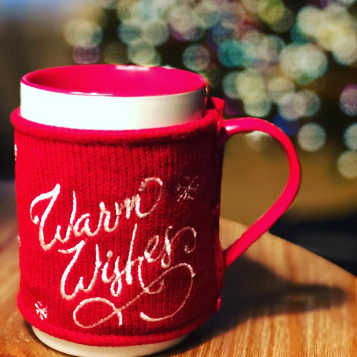
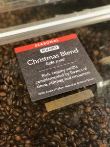
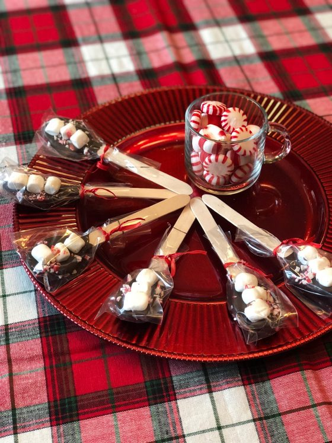
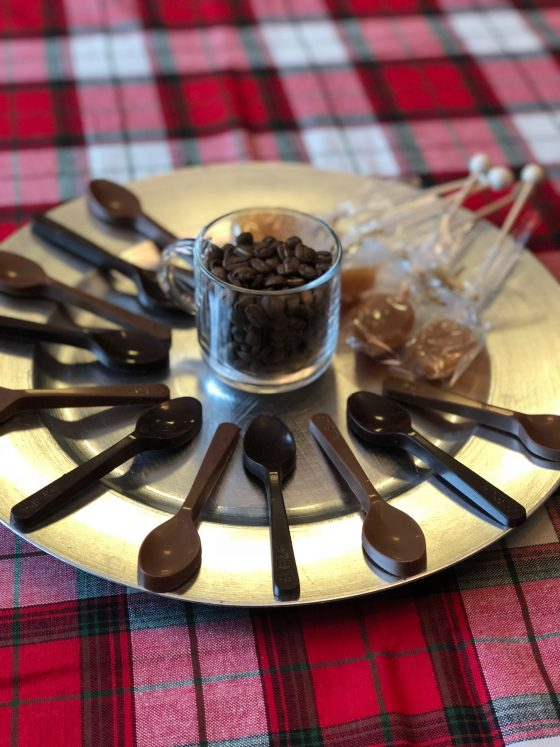
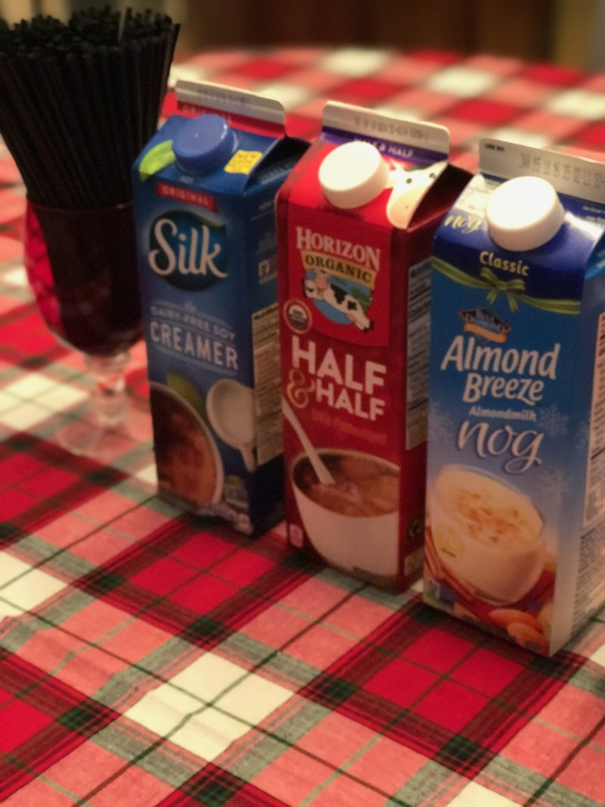
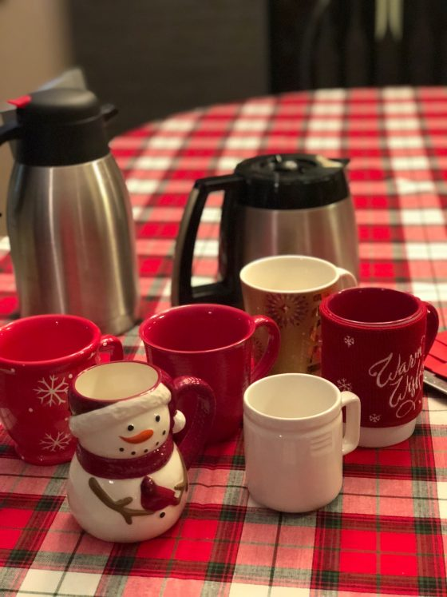
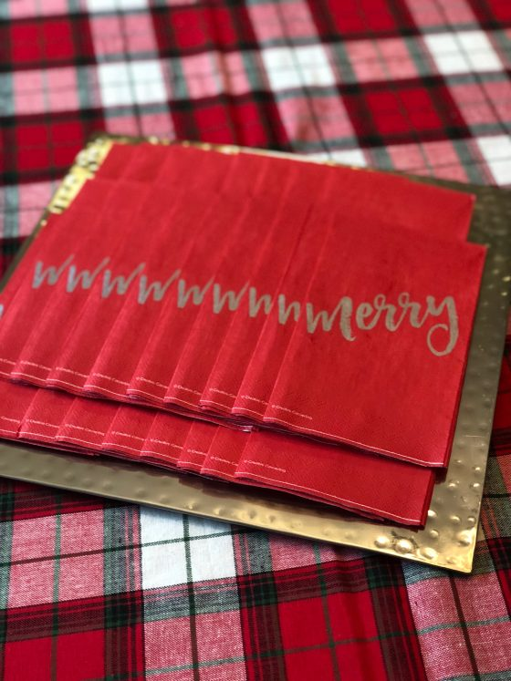
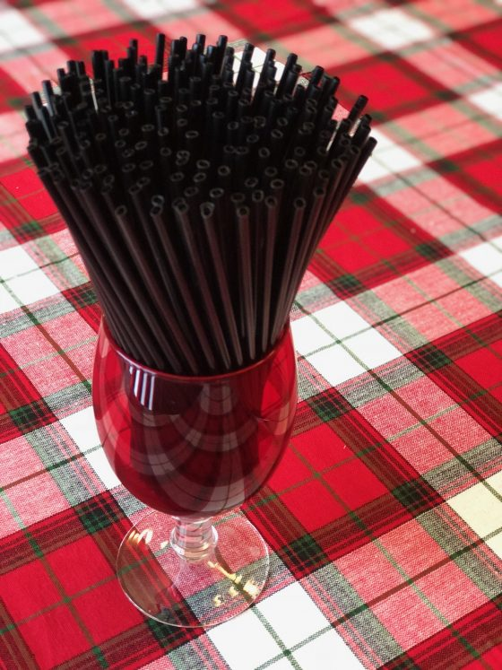

5 EASY STEPS TO CREATE A HOLIDAY COFFEE BAR
Posted, July 15, 2018
Enjoying Coffee at Christmas

I love the Christmas season
It is the perfect time to spoil friends and family. A time to share the things we love with others. It was the Christmas spirit that led to this idea of creating a Holiday Coffee Bar! You can follow the 5 easy steps below, or create a more lavish affair with your own flair or theme. Have fun sharing your love of coffee with those you love this season!
1. Purchase the coffee.

You will want to offer your guests two options for the coffee. One holiday flavored coffee with delicious seasonal flavors and a high quality black coffee to pair with any flavors your guests will add to their coffee. Superbia Coffee is the perfect choice because it is very fresh and has a medium body smoothness that appeals to a wide range of coffee drinkers. Coffee Lover’s Shop
2. Select seasonal add ins.
Making sure to suit all your guest needs, purchase a variety of creamers. Instead of offering sugar, I chose chocolate, salted caramel and festive coffee spoons. This made for the perfect add in and offered a festive fun look to the bar. Not to mention super easy to serve.
|  |  |  |
3. Choose a few Christmas treats.
Everyone loves a sweet treat during the Christmas season. Purchase some festive, chocolate covered oreos, brownies or a low sugar chocolate cake with raspberry frosting. Any festive dessert or pastry will pair nicely with a cup of coffee.
|  |  |  |
5. Prepare and enjoy!
Prep your coffee ahead and serve in thermal carafes to ensure it stays hot. Keeping the coffee pot on your coffee burner for a length of time will burn the coffee. I strongly discourage using a Keurig for this affair. The point is to create a special Holiday Coffee Bar and there is something special about freshly ground and brewed coffee. My Holiday Coffee Bar was a huge success, festive and fun! I would love to see a pic of YOUR Holiday Coffee Bar this season, so make sure to post a pic to my Facebook page when you host yours! -Crystal
Resource: The cappuccino traveler